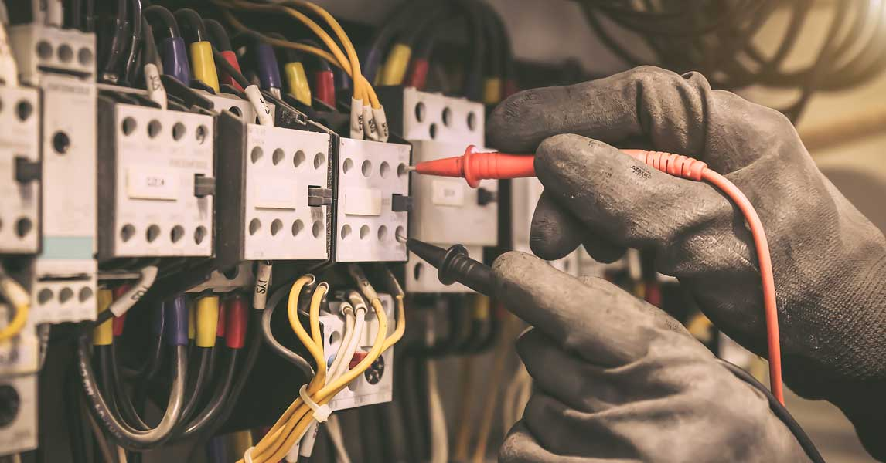

Data and Communications Cabling for St Ives Home Offices — Electrician St Ives
Excellence in St Ives.
Grove SparkExcellence in St Ives.
Grove SparkSt Ives has seen a dramatic shift in how residents work, with more professionals across the 2075 postcode setting up permanent home offices that demand the same connectivity and reliability as a corporate workspace. For families and freelancers throughout the Ku-ring-gai council area, a properly cabled home office is no longer a luxury but a daily necessity that directly affects productivity, video call quality, and network security.
The leafy residential blocks surrounding St Ives Shopping Village and extending toward Garigal National Park are filled with homes originally wired decades before high-speed internet became essential. Running a modern home office on ageing infrastructure often means dropped connections, slow upload speeds, and frustrating interference. A qualified electrician in St Ives who specialises in data and communications cabling can assess your existing setup and design a structured cabling solution that meets both current needs and future bandwidth growth.
Sydney's North Shore climate, with its humid summers and occasional electrical storms, adds another dimension to home office reliability. Surge protection for networking equipment, properly shielded Cat6A cabling, and dedicated circuits for office areas all contribute to an environment where the technology works without interruption, even during the storm season that frequently rolls across the 2075 area from late spring through autumn.
The proximity of St Ives to business hubs in Macquarie Park and Chatswood means many residents are hybrid workers who split time between a corporate office and a home setup just minutes from the Pacific Highway. Having a professionally cabled home office with enterprise-grade data points removes the frustration of relying on wireless alone and ensures that your North Shore home keeps pace with the professional demands of the modern workplace.
Grove Spark Electrical Services is a leading electrician in St Ives with deep expertise in data and communications cabling for residential and commercial properties across Sydney's North Shore. Master Electrician Joshua Grove (Licence 363893C) and his team have spent over ten years helping Ku-ring-gai homeowners build home offices that perform at a professional standard. From structured Cat6A installations to network rack setups, Grove Spark brings the same precision to data cabling that they apply to every electrical service. Grove Spark
Structured data cabling is a standardised system of cables, connectors, and patch panels that delivers reliable network connectivity throughout your home. Unlike running a single ethernet cable from your router to your desk, a structured system creates multiple data points in every room where connectivity matters. For St Ives home offices, this means hardwired internet at your desk, in your meeting area, and at any secondary workstation without relying on wireless signal strength. Grove Spark installs Cat6A cabling rated for 10-gigabit speeds, which future-proofs your St Ives property for the bandwidth demands coming over the next decade. explore our full range of electrical services

The process begins with a site assessment where your electrician maps the locations of data points relative to your home office, living areas, and any entertainment zones. In established St Ives homes, cabling is typically routed through roof cavities and wall spaces to avoid visible conduit runs. Joshua Grove and his team use fish tapes and inspection cameras to navigate existing wall structures without unnecessary damage to plaster or paintwork. Each cable run terminates at a central patch panel, usually installed in a utility cupboard or dedicated network enclosure, giving you a clean and organised hub for your entire home network.
Beyond the cabling itself, a complete home office network in the St Ives 2075 area requires a quality router or managed switch, a patch panel to organise cable terminations, and wall-mounted data outlets at each workstation. Grove Spark recommends a dedicated electrical circuit for your home office area to prevent overloading shared circuits with high-draw equipment such as monitors, printers, and UPS battery backup units. electrician pymble specialists also advise installing surge protection at the switchboard level to shield sensitive networking hardware from voltage spikes that can travel through the mains during storms common on Sydney's North Shore.
Many older homes across St Ives and the broader Ku-ring-gai area suffer from slow or unreliable internet not because of their broadband plan, but because of poor internal wiring. Properties built before the NBN era often rely on decades-old telephone cabling that simply cannot carry the data speeds available today. Replacing that legacy wiring with Cat6A ethernet cabling eliminates bottlenecks between your NBN connection point and your home office. Residents regularly report that a structured cabling upgrade transforms their experience, delivering the full speed they are paying for without the dropouts that plague wireless connections through thick North Shore brick walls and concrete slab floors.

Homes in Gordon and the surrounding streets of the Upper North Shore share many structural characteristics with St Ives properties, including brick veneer construction, tiled roof cavities, and double-brick walls in older builds. An experienced North Shore electrician understands that running cables through these materials requires specialist tools and careful planning. Grove Spark has completed hundreds of data cabling projects across Gordon, Pymble, and St Ives, and the team knows which cable pathways work best for each building type. That local construction knowledge is something a contractor from outside the area simply cannot replicate.
Pricing depends on the number of data points, the complexity of cable runs, and whether additional electrical work such as dedicated circuits or surge protection is included. For a typical St Ives home office with four to six data points, a central patch panel, and wall outlets, homeowners can expect a professional installation to represent a sound investment that delivers years of reliable performance. electrician macquarie park Grove Spark provides detailed, obligation-free quotes that itemise every component so there are no surprises. Joshua Grove believes every St Ives resident deserves a transparent quoting process, and that principle has helped build the company's strong reputation across the Ku-ring-gai region over the past decade.
Data cabling intersects with your home's electrical infrastructure, which means it must comply with Australian cabling standards (AS/CA S009) and relevant electrical regulations. An unlicensed installer may deliver a system that works initially but fails to meet compliance requirements, leaving you exposed to insurance complications and safety risks. A licensed electrician in St Ives like Grove Spark ensures that every installation meets the relevant standards, is properly documented, and integrates safely with your existing electrical system. That compliance protection is especially important in Ku-ring-gai, where property values are high and buyers expect every aspect of a home to meet current standards. Ready to find the right data cabling solution in St Ives? Contact Grove Spark Electrical Services at 0484 301 155
Grove Spark Electrical Services serves customers throughout St Ives and Ku-ring-gai, including Gordon, Pymble, Turramurra, Killara, Lindfield, Roseville, Wahroonga, Macquarie Park, St Ives Chase, and West Pymble. Whether you are in Chatswood or Lane Cove, our data cabling and electrical team is nearby and ready to help with your home office project.
Most home office cabling projects in the St Ives and Ku-ring-gai area are completed within a single day. A standard installation with four to six data points, including a central patch panel and wall outlets, typically takes between four and six hours. More complex setups that include multiple rooms, dedicated circuits, or surge protection at the switchboard level may extend into a second day depending on the cable routing requirements through your North Shore home.
Data cabling installations inside your existing home generally do not require development approval from Ku-ring-gai Council. The work falls within the scope of standard internal alterations that a licensed electrician can complete under their electrical licence. However, if your project involves external conduit runs, modifications to heritage-listed features, or work that affects the building envelope, your St Ives electrician should check whether additional approvals are required before starting the job.
Cat6 cabling supports speeds up to one gigabit per second at distances of 100 metres, which is suitable for most current home office needs. Cat6A cabling supports ten-gigabit speeds at the same distance, offering significantly more headroom for future bandwidth growth. For St Ives homeowners investing in a structured cabling system, Grove Spark recommends Cat6A because the marginal cost difference is small compared to the long-term performance benefit, especially as internet speeds continue to increase across the North Shore NBN network.
Yes, an experienced electrician in St Ives uses roof cavity access, existing cable pathways, and specialised fish tapes to route cables through wall spaces with minimal disruption. Joshua Grove and his team have extensive experience working in older brick and timber homes throughout Pymble, Turramurra, and St Ives where preserving the interior finish is a priority. Any necessary wall penetrations are neatly patched and finished, and cable entry points are concealed behind flush-mounted wall plates.
Wireless networks offer convenience but cannot match the stability and speed of a hardwired ethernet connection, particularly in St Ives homes with thick brick walls or multiple storeys that weaken the wireless signal. For professional tasks such as video conferencing, large file transfers, and cloud-based applications, a wired data point at your desk delivers consistent performance that wireless simply cannot guarantee. Grove Spark recommends a combination of structured cabling for primary workstations and quality wireless access points for general household use throughout your Ku-ring-gai home.